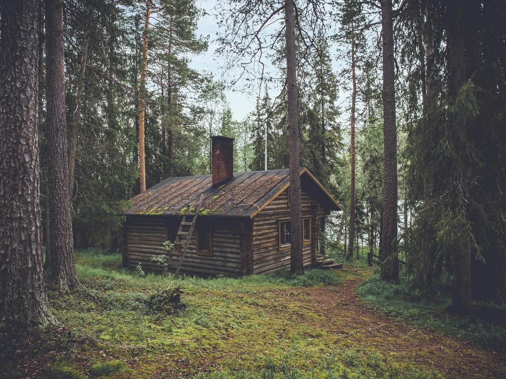
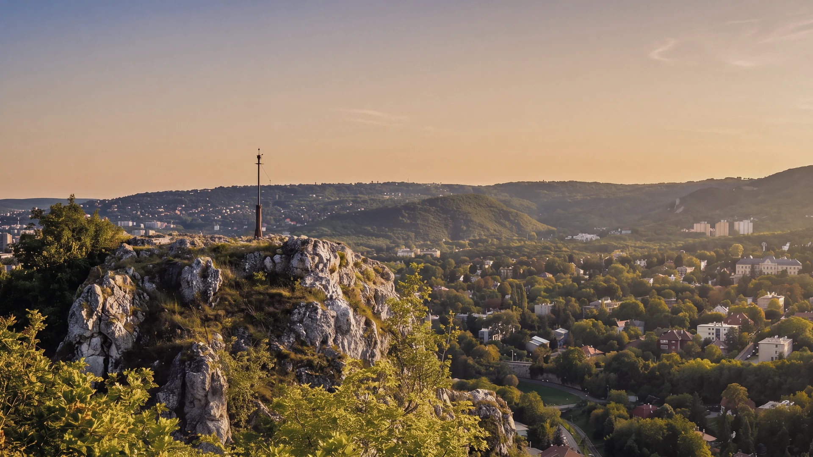
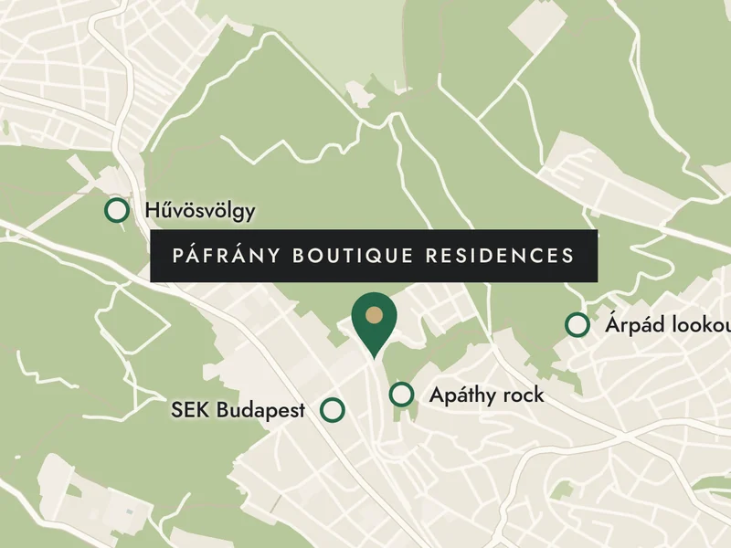
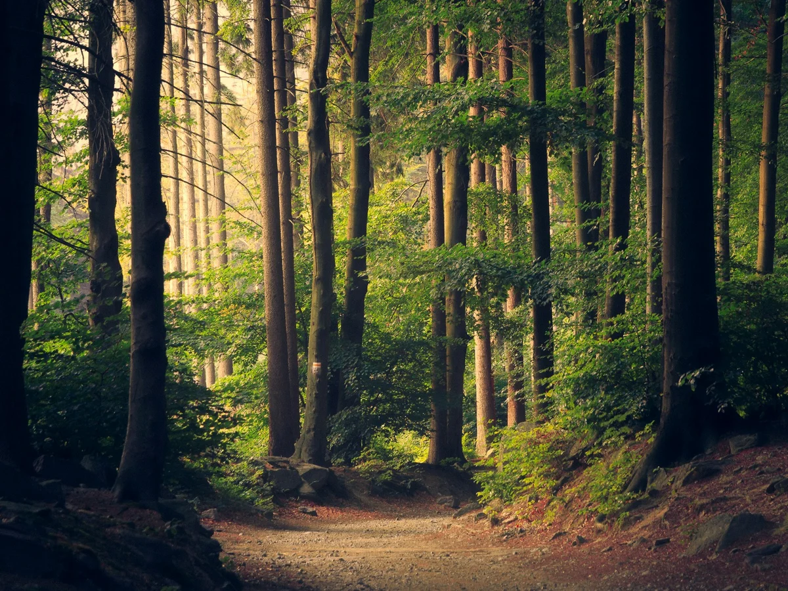
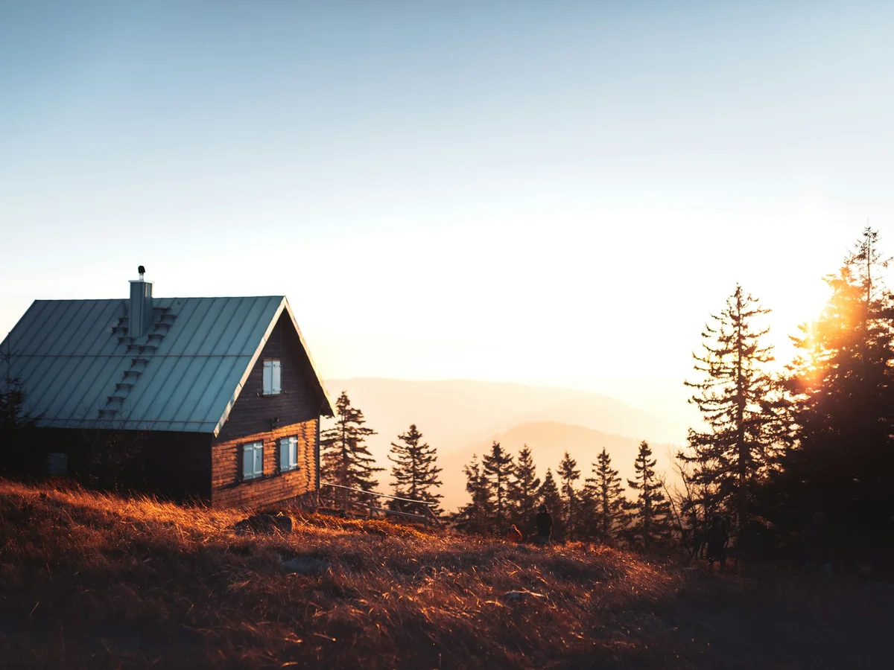

1820: the house that started the Buda villa quarter
A miller’s inn and the families who followed.

Páfrány Boutique Residences stands at Páfrány út 17/b in Budapest’s District II (2nd district), between Pasarét and Hűvösvölgy, on the edge of the protected Apáthy rock. The project is named after the street: páfrány is Hungarian for fern. It is a separate site and development from the Páfrány 9 project at Páfrány utca 9. Its thirty new-build residences in District II come with a full Gaggenau kitchen and an integrated smart home.
The quiet villa streets of Pasarét lie below, the woods of Hűvösvölgy above; Rózsadomb is a short drive away. The site borders the Apáthy rock, a 242-metre dolomite crag and local nature reserve since 1977. Páfrány is built outside its protection zone, with contractual nature protection commitments.
Páfrány út 17/b is 9.5 km from the city centre, about 20 minutes by car, and 30 km from Budapest Airport, about 45 minutes. SEK Budapest International School is a five-minute walk away, the German School Budapest a ten-minute drive, and Hűvösvölgy 2 km. The Apáthy rock next to the site has been a protected nature reserve since 1977.

Below the rock lay the medieval village of Nyék, and beside it the walled royal hunting park and lodge of kings Sigismund and Matthias. In 1820 the Buda miller Lipót Gőbl bought the hillside and built an inn, for decades the only building here. Buda families who came to walk and dine began to buy plots, and the villa quarter grew around the inn. The listed 1820 building of the lipótmezei vendéglő remains part of Páfrány Boutique Residences.
The house todayRoyal hunting park of Sigismund and Matthias beside Nyék.
Lipót Gőbl builds the inn, the first house of the quarter.
The Apáthy estate is parcelled out; Pasaréti út follows in 1899.
The Apáthy rock becomes a protected nature reserve.
The inn stays at the centre of Páfrány.

A miller’s inn and the families who followed.

Traces of a medieval landscape in the woods.

Dates and commitments of the project.
At Páfrány út 17/b (plots 11663/35 and 11663/40) in Budapest’s District II, between Pasarét and Hűvösvölgy, at the foot of the Apáthy rock.
A 242-metre dolomite crag above Páfrány út, protected as a local nature reserve since 1977. Its lookout and nature trail are popular with walkers.
The site sits on the edge of a nature reserve, surrounded by villa gardens and the woods of the Buda hills.
The city centre (Deák Ferenc tér) is 9.5 km away, about 20 minutes by car, and Budapest Airport 30 km, about 45 minutes. SEK Budapest International School on Hűvösvölgyi út is a five-minute walk; the German School Budapest on Cinege út is about ten minutes by car.
No. Páfrány 9 Residence at Páfrány utca 9 is a separate project with a different developer, plot and building.
Floor plans, availability and private viewings for agents, buyers and their advisors.
Register interest